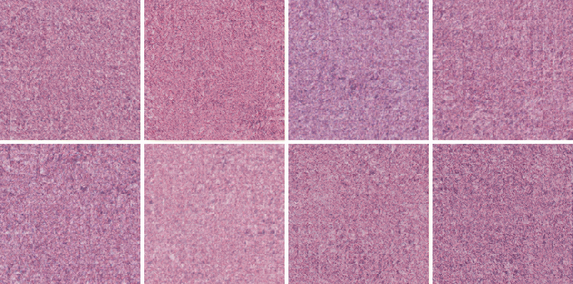
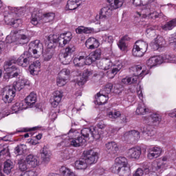
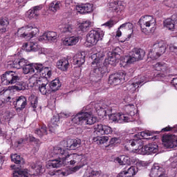
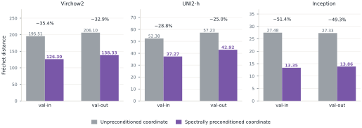
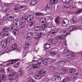
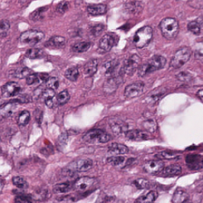

Halo: State-of-the-art H&E generation with interpretable control

We built Halo to explore tumour biology by changing specific features of tissue morphology. Halo is a conditional generator of H&E images that lets us edit interpretable tissue concepts, render the resulting morphology, and examine the associated changes in predicted gene expression. This control could help investigate how tissue morphology relates to molecular changes, opening new directions for studying disease and developing biomarkers.
Unlike VAE-based generators, Halo generates directly in GigaPath’s native feature space, where the latent representations capture H&E-specific tissue morphology (Xu et al., 2024). A decoupled diffusion transformer (Wang et al., 2026) generates feature maps that an image decoder converts into H&E images. Halo outperforms CytoSyn v2 (Duboudin et al., 2026) on 20 of 24 distributional comparisons across conditional and unconditional generation. To explore its biological utility, we edit colorectal tumour representations by replacing selected tissue concepts with concepts typical of normal colonic mucosa, then generate images from the edited representations. An independent model, HistoPrism (Hu et al., 2026), predicts gene expression from these images. The predicted changes agree with published tumour-to-healthy differences in nine of the eleven gene sets we evaluated.

original tumour tile
Summary
- Halo generates realistic tissue while retaining information from the conditioning image. Halo outperforms CytoSyn v2 on 20 of 24 distributional comparisons. Compared with CytoSyn v2, Halo’s conditional generations more closely resemble the source tiles and more often fall within the range of real tissue features, although they cover slightly less of that range.
- Editing tissue concepts changes the morphology Halo generates. Starting from colorectal tumour tiles, we exchange concepts to steer their representations toward normal colonic mucosa. After generation, a tissue classifier labels 98.8% of the edited images as normal mucosa, compared with 0.7% of images generated from the unedited representations.
- The edits produce predicted gene-expression changes consistent with a shift toward healthy colorectal tissue. An independent image-to-expression model provides the readout. In nine of eleven gene sets drawn from published studies, the targeted edits produce stronger agreement with the expected changes than random edits of the same size.
Background
Gland structure, tumour-cell appearance, immune infiltration and surrounding stroma all contribute to the morphology of a tumour biopsy. When comparing biopsies, it can be difficult to determine which of these features is associated with a difference in gene expression or treatment response. A controllable generator offers a way to edit specific morphological features and examine the associated changes in predicted gene expression.
Such edits could help nominate tissue features associated with treatment resistance or distinguish patient groups for biomarker studies. Researchers could also use a target gene-expression profile to guide the edits, selecting tissue concepts predicted to raise or suppress particular gene programmes and using Halo to visualise the resulting morphology. Both approaches require realistic generation that preserves enough of the source tissue’s characteristics for the effects of an edit to be interpretable.
A representation autoencoder (RAE) pairs a frozen pretrained image encoder with a decoder trained to reconstruct images from the encoder’s feature maps (Zheng et al., 2025; Singh et al., 2026). A diffusion or flow model then learns to generate these feature maps, which the decoder converts into pixels. Generation therefore takes place in a representation that already captures visual structure learned during pretraining. Conventional latent image generators instead use a variational autoencoder (VAE), whose encoder and decoder are trained jointly to compress and reconstruct images. This produces a compact latent space, but the training objective does not explicitly require it to organise images by their semantic content. An RAE retains the pretrained encoder’s representation, giving the generator access to richer features.
Halo uses GigaPath, a pathology foundation model, as its frozen encoder (Xu et al., 2024). GigaPath provides both the feature maps Halo generates and the conditioning token that guides generation: a 1,536-dimensional CLS token summarising a source tile. We use a sparse autoencoder to decompose this conditioning token into interpretable tissue concepts, and a tissue classifier to guide edits to those concepts. Halo then generates an image from the edited token, allowing us to inspect the resulting morphology. In this post, we use that process to steer colorectal tumour images toward normal colonic mucosa.
How Halo works
Halo is a representation autoencoder built on a frozen GigaPath encoder, with two trained components: a conditional flow model and an image decoder. The flow model, a decoupled diffusion transformer (DDT; Wang et al., 2026), transforms Gaussian noise into a GigaPath feature map of shape \(1536 \times 14 \times 14\), guided by the conditioning token of a source tile. The decoder converts the generated feature map into an H&E image.
Before flow training, a fixed spectral preconditioner rescales the GigaPath feature maps. This transformation is reversed before the generated features reach the decoder. Both the flow model and the decoder are trained on 40 million H&E tiles from TCGA. Figure 3 shows the generation process and how the decoder is trained; the next section explains the purpose of spectral preconditioning. Network architecture, training objectives and sampling details are provided in the Architecture dropdown below.
![Two-panel diagram of Halo. Panel a, generating a tile: a condition tile is encoded by frozen GigaPath to a CLS token, which steers a conditional DDT integrating a 30-step reverse ODE from Gaussian noise; the inverse preconditioner and a decoder turn the result into a generated tile. Panel b, training the decoder: an H&E tile enters the frozen GigaPath encoder, block outputs are aggregated into a 1536 by 14 by 14 latent, and a ViT decoder reconstructs the tile under pixel, GigaPath-perceptual and GigaPath feature-adversarial losses. A line joins the decoder in panel a to the ViT decoder in panel b, marking them as the same block.](img/halo_architecture.svg?v=7)
Related work
Representation autoencoders and latent flows. Diffusion transformers scale image generation with transformer backbones (Peebles and Xie, 2023), and representation alignment improves training by aligning a diffusion model’s intermediate states with pretrained representations (Yu et al., 2025). A representation autoencoder replaces the low-dimensional variational latent with frozen semantic representations and generates in the resulting high-dimensional space (Zheng et al., 2025). RAEv2 improves reconstruction through multi-layer features and combines latent autoencoding, self-REPA and internal guidance, using DINO-family natural-image encoders (Oquab et al., 2024) for its representation and perceptual objectives (Singh et al., 2026). Halo keeps the representation-autoencoder principle and replaces those natural-image components with a single pathology foundation model for the representation, the losses and the conditioning, then adds a bounded spectral preconditioner that flattens the measured H&E latent spectrum onto a white Gaussian endpoint.
Histopathology generation. GigaPath is a whole-slide pathology foundation model (Xu et al., 2024); it supplies every encoder-side component here. The other public histopathology generator, PixCell (Yellapragada et al., 2025), uses a conventional latent-diffusion pipeline with a natural-image VAE and UNI2-h conditioning; CytoSyn’s controlled re-evaluation places CytoSyn ahead of it on Fréchet distance under every extractor tested (Duboudin et al., 2026), which is why CytoSyn v2 is the baseline this post measures against, introduced with the results.
Concept decomposition of pathology embeddings. PICASSO fits a top-\(k\) sparse autoencoder to pathology foundation-model embeddings over 120 million TCGA patches from 32 cancer types, producing a dictionary of morphological concepts verified with pathologists, and shows what such a dictionary is good for: auditing downstream classifiers by Integrated Gradients attribution over concepts, correlating concept activations with spatial transcriptomics, suppressing artifact concepts to undo shortcut learning, and simulating interventions such as raising lymphocyte infiltration, scored by a survival model (Kim et al., 2026). Its companion diffusion model Emb2Img renders modulated embeddings so that pathologists can inspect the counterfactual morphology. The second half of this post fits the same kind of dictionary to GigaPath CLS tokens and differs in where the evaluation happens. PICASSO scores the edited embedding and checks the render by eye; we score the render itself: the edited token is generated as tissue, the image is re-encoded and scored by the classifier that guided the edit, and its predicted gene expression is read by an independent model on a different encoder.
Covariance-aligned diffusion and preconditioned flow matching. Prior work has matched the covariance of data and noise in diffusion models (Everaert et al., 2024), analysed diffusion in Fourier space and proposed equalising per-frequency signal-to-noise (EqualSNR; Falck et al., 2025), learned general preconditioners for score and flow matching (Ahamed et al., 2026), and whitened the prediction residual under a coloured-noise model (Mao and Li, 2026). Halo’s preconditioner is a fixed radial instance of the same idea; its relation to each of these is worked out in the drawers of the preconditioning section.
Spectral preconditioning
Halo’s flow model is trained on mixtures of GigaPath feature maps and Gaussian noise, with the mixing proportion varying along the training path. These feature maps have an uneven distribution of power across spatial frequencies: low frequencies carry much more power than high frequencies. Gaussian noise, by contrast, has equal power at every frequency on average. Adding noise therefore obscures the weaker high-frequency features much sooner than the stronger low-frequency features, leaving a shorter part of the training path over which the model can learn to recover fine spatial detail.
Spectral preconditioning reduces this imbalance by rescaling the frequency components of the feature maps. Frequencies with more power are scaled down, while those with less power are scaled up, bringing the average spectrum closer to that of the noise. The scaling factors are calculated once from the training data and held fixed. The flow model learns to generate these rescaled features; before decoding, the inverse transformation returns them to the original feature space. The dropdowns below give the mathematical details and explain how this approach relates to covariance alignment and other preconditioning methods.
To measure the effect, we trained two flow models on one million tiles, with and without spectral preconditioning, while keeping the decoder, flow architecture and 30-step sampler fixed. Preconditioning reduced Fréchet distance (Heusel et al., 2017) in all six comparisons across three feature extractors and both validation splits (Figure 4). Fréchet distance fell by 33–35% under Virchow2 (Zimmermann et al., 2024), 25–29% under UNI2-h (Chen et al., 2024) and 49–51% under Inception (Szegedy et al., 2016), with improvements on both training-source and held-out slides. This experiment isolates the contribution of preconditioning at one-fortieth of the full training scale.

The preconditioner in detail
The preconditioner rescales spatial frequencies in the channel-standardised GigaPath feature map, \(\bar z\). We measure the average power in each frequency band across channels and training tiles, then scale its Fourier coefficients by the reciprocal square root of that power. Before applying the gain limits described below, this brings each band’s average power to one, matching white Gaussian noise:
Here, \(\mathcal F\) is the orthonormal two-dimensional Fourier transform, applied separately to each channel. We group the 196 frequency bins of the \(14\times14\) grid into eleven radial bands by their rounded distance from the zero-frequency bin. Each band contains frequencies with similar spatial scales. Writing \(r(f)\) for the band containing frequency bin \(f\), and \(\mathcal B_r\) for its set of bins, we calculate the average power as:
The other end of the path is white Gaussian noise, independent \(\mathcal{N}(0,1)\) in every latent element, whose expected power is 1 in every Fourier bin. That is the standard diffusion endpoint and we leave it alone; what Halo changes is the clean side of the path, not the noise it runs to. Both profiles are normalised so that their power averaged over the 196 bins is 1: for white noise trivially, and for \(\bar z\) automatically by Parseval’s theorem, since every channel has unit variance. Writing \(A_z(r)=\bar S_z(r)^{1/2}\) for the latent amplitude, the gain in Equation 11 is \(1/A_z\). The implementation floors \(A_z\) at \(10^{-12}\) before inversion and bounds the result, so the gain actually applied is
so \(P_q\) is a bounded whitening of the latent’s average radial spectrum: each shell is scaled by the reciprocal of its measured amplitude, within a factor of four either way. The bounds \([0.25,4]\) are the implementation’s defaults, fixed before the profile was measured and not tuned.
The same radial gain is applied to every channel. It is real and radially symmetric, so the output of the inverse transform is real up to round-off, which the implementation strips with \(\Re\); it preserves Fourier phase, injects no noise, and remains invertible because the positive lower bound prevents zero gain. The flow operates on \(P_q(\bar z)\); generated latents pass through \(P_q^{-1}\), which divides by the same gain, before channel denormalisation and frozen decoding.
The measured profile is dominated by its zero-frequency shell (Figure 5). DC holds 32.9 % of the latent power in one of 196 bins. That is a per-image offset rather than part of the texture spectrum: channel standardisation subtracts a single population mean and never each image’s own spatial mean, so whatever mean level a tile has survives into \(\bar z\). Over the ten other shells the gain runs from 0.66 at \(r=1\) to 1.47 at \(r=10\), so the preconditioning is mild over almost all of the grid. At DC the unclipped gain would be 0.124; the lower bound holds it at 0.25, which makes that one bin the only place the clip binds and the only place the transformed latent does not match the endpoint, sitting at about four times its power.
Architecture
Notation
Let \(E_\ell(I)\in\mathbb{R}^{P\times C}\) denote the GigaPath patch tokens from zero-indexed transformer block \(\ell\), with \(P=HW=196\), \(C=1536\) and \(H=W=14\). The encoder has 40 blocks and a patch size of 16 pixels. We use the block set \(\mathcal{A}=\{10,\dots,39\}\), so \(|\mathcal{A}|=30\), and write \(\ell_{\max}=39\). \(\operatorname{LN}\) denotes GigaPath’s final non-affine layer normalisation applied token-wise, replaced in our implementation by a non-affine \(\operatorname{LayerNorm}(1536)\). For \(U\in\mathbb{R}^{P\times C}\), \(\operatorname{MeanToken}(U)=P^{-1}\sum_{p=1}^{P}U_p\), broadcast across all \(P\) positions. The backbone is frozen and held in evaluation mode throughout both stages. Inputs are mapped from the generator’s \([-1,1]\) convention to encoder convention by \(x_{01}=(x+1)/2\) followed by standardisation with mean \((0.485,0.456,0.406)\) and standard deviation \((0.229,0.224,0.225)\).
| \(I,\hat I\) | input tile and reconstruction, \(224\times224\times3\) | \(E_\ell\) | GigaPath patch tokens at block \(\ell\) |
|---|---|---|---|
| \(\mathcal{A}\) | latent block set, \(\{10,\dots,39\}\) | \(\mathcal{A}_{\mathrm{loss}}\) | loss block set, \(\{10,29,36,39\}\) |
| \(z,\bar z\) | latent and channel-standardised latent | \(P,C\) | 196 positions, 1,536 channels |
| \(P_q\) | radial Fourier preconditioner | \(g_q\) | bounded amplitude gain |
| \(h\) | conditioning CLS token, 1,536-d | \(D\) | latent elements, 301,056 |
| \(\mathcal{D}\) | GigaPath-feature discriminator | \(\mathcal{L}_{\mathrm{pix}},\mathcal{L}_{\mathrm{GP}},\mathcal{L}_{\mathrm{adv}}\) | pixel, perceptual and adversarial terms |
| \(w\) | self-REPA guidance weight, 0.5 | \(\varepsilon_t\) | velocity denominator floor, 0.05 |
| \(a_f,d_f\) | sparse code and unit decoder direction | \(F\) | dictionary width, 49,152 |
| \(m_t\) | one-vs-rest log-odds margin | \(g\) | margin gradient in token space |
| \(R_N\) | mean real-NORM radius, 39.19 | \(\tau_N\) | median real-NORM margin, 14.35 |
| \(C_N\) | 256 NORM-frequent candidates | \(d_z\) | paired effect size across slides or patients |
The latent and the decoder
GigaPath is a 40-block vision transformer with 16-pixel patches, so a \(224\times224\) tile becomes 196 patch tokens of 1,536 channels at every block. We take blocks 10 through 39, layer-normalise each block’s token map, average them, and add the mean token of the last block, broadcast to every position. Reshaping gives the \(1536\times14\times14\) latent \(z\); centring and scaling each of the 1,536 channels to unit variance, with population statistics over all training tiles and positions, gives \(\bar z\).
The latent in detail
With the notation above,
The second term is a single vector broadcast to all 196 positions, not a layer average. Reshaping to \(C\times H\times W\) gives the \(1536\times14\times14\) latent \(z\), and \(\bar z\) is obtained by centring and scaling each of the 1,536 channels to unit variance using population statistics computed over all training tiles and spatial positions.
The latents the flow produces at inference are not perfect GigaPath features, so the decoder has to cope with slightly noisy input. Decoder training prepares for this by adding noise to the latent: for each example \(b\) we draw a single scalar \(\sigma_b\sim\mathcal{U}(0,0.5)\), broadcast it across all positions and channels, and give the decoder \(\tilde z_b=z_b+\sigma_b\epsilon_b\) with \(\epsilon_b\sim\mathcal{N}(0,I)\). Because the noise level is drawn fresh for every example, the decoder is trained across the whole range of corruption up to \(\sigma=0.5\) rather than on clean latents alone.
The decoder network
The decoder is a pre-norm vision transformer operating on the 196 latent tokens. A linear map projects each 1,536-dimensional token to width 768; one learned CLS token is prepended; fixed two-dimensional sine–cosine positional encodings are added; twelve transformer blocks are applied; and a final linear layer predicts \(16\times16\times3=768\) values per patch, which are unpatchified into the reconstruction. The CLS-token prediction is discarded. The output carries no activation and is unbounded; clamping to \([-1,1]\) is applied only by visualisation and by the adversarial path.
- Hidden width
- 768
- Depth
- 12 pre-norm blocks
- Heads
- 12, head dimension 64
- MLP ratio
- 4, hidden width 3,072
- Activation
- GELU
- Attention
- scaled dot-product
- Register tokens
- 0
- Output
- linear, unbounded
The decoder is trained with three losses. A pixel loss anchors colour and layout, but on its own it averages over fine structure, nuclei, gland boundaries and texture, and reconstructs it blurred, so two further terms judge the reconstruction in GigaPath’s feature space rather than in pixels. A perceptual term re-encodes the reconstruction with GigaPath and compares its patch features at four depths (blocks 10, 29, 36 and 39) with those of the original. An adversarial term trains small discriminator heads on frozen GigaPath patch features at the same four depths to tell reconstructions from real tiles. Both feature-space terms therefore score the reconstruction in the same space the latent is drawn from.
The reconstruction objective
The decoder is trained against
with \(\lambda_{\mathrm{GP}}=1\) and \(\lambda_{\mathrm{adv}}=0.5\). The pixel term \(\mathcal{L}_{\mathrm{pix}}=\frac{1}{3HW}\|I-\hat I\|_1\) is the mean absolute error over the \(224\times224\times3\) values of the tile.
For the perceptual term, let \(\mathcal{A}_{\mathrm{loss}}=\{10,29,36,39\}\) denote the GigaPath blocks it is computed at, \(\mathcal{P}=\{1,\dots,196\}\) the patch positions, and \(\bar\phi_{\ell,p}(I)\) the unit-\(\ell_2\)-normalised patch feature from block \(\ell\) at position \(p\):
Because the features are unit-normalised, \(\|\bar\phi_{\ell,p}(I)-\bar\phi_{\ell,p}(\hat I)\|_2^2=2-2\cos\theta_{\ell,p}\), where \(\theta_{\ell,p}\) is the angle between the two features, so the loss compares the direction of each patch feature and ignores its magnitude.
The generator adversarial loss \(\mathcal{L}_{\mathrm{adv}}=-\mathbb{E}[\mathcal{D}(\hat I)]\) is the negative mean discriminator logit on reconstructions. The factor \(a(I,\hat I)\) is the VQGAN adaptive weight (Esser et al., 2021), the ratio of the reconstruction and adversarial gradient norms at the decoder’s final projection \(W\),
detached from the graph so that it acts as a scalar weight.
The discriminator \(\mathcal{D}\) is a frozen GigaPath encoder with one trainable head per block in \(\mathcal{A}_{\mathrm{loss}}\). Each head takes that block’s 196 patch tokens, CLS excluded and after GigaPath’s final layer norm, and applies a \(1\times1\) spectrally-normalised convolution, a residual block with a kernel-9 convolution along the token sequence, and a \(1\times1\) convolution to one logit per token. The discriminator is trained with the hinge objective averaged over all \(4\times196\) logits,
On the adversarial path only, reconstructions are clamped to \([-1,1]\) and quantised to 8-bit levels with a straight-through gradient, and real and reconstructed tiles alike pass through differentiable augmentation (translation, colour jitter and 20 % cutout) before the discriminator sees them. The perceptual term reads the raw decoder output.
The conditional flow
The flow is trained by flow matching between the preconditioned latent and white noise. Let \(x_0=P_q(\bar z)\) be the preconditioned clean latent, where \(P_q\) is the spectral preconditioner, and \(x_1=\epsilon_q\) the noise, connected by the linear path \(x_t=(1-t)x_0+tx_1\) for \(t\in[0,1]\).
The model \(f_\theta\) is a decoupled diffusion transformer: a 24-block encoder reads the noisy latent, the time and the condition, and a small 2-block DDT decoder, distinct from the pixel decoder above, turns its output into the prediction. It predicts the clean endpoint, \(\hat x_0=f_\theta(x_t,t,h)\), in preconditioned coordinates, and that prediction implies a velocity \(\hat v_\theta=(x_t-\hat x_0)/t\), which is trained toward the path velocity \(v^\star=x_1-x_0\). The full flow objective is
The expectation is over training tiles, independently sampled noise and flow times, and condition dropout. The second term is the self-REPA loss of RAEv2 (Singh et al., 2026): a linear readout \(\hat x_0^{\mathrm{REPA}}\), taken from the encoder after the sixth of its 24 blocks, regresses the same preconditioned clean latent as the main head, by mean squared error over tokens and channels. Both heads therefore estimate \(x_0\), and the intermediate one is a weaker estimate of it, rather than an estimate of an external representation as in the original REPA (Yu et al., 2025). That is what makes the guidance rule used in sampling possible.
The condition \(h\) is the CLS token from GigaPath’s last block for a condition tile \(I_c\), a 1,536-dimensional summary of that tile. During training \(I_c\) is the target tile itself, so the flow learns to regenerate a tile from its own summary; at sampling time any CLS token can be supplied, including one that belongs to no real tile, which is what the editing experiments later do. For 10 % of training examples \(h\) is replaced by a learned null token, so the same model generates unconditionally as well. Inside the network \(h\) is a single in-context token: the sequence is the 196 latent tokens, four time tokens and one token for \(h\), and the latent tokens attend to all of them.
Velocity parameterisation, time sampling and the flow configuration
The implied and target velocities are
with the denominator floored at \(\varepsilon_t=0.05\) so that the velocity stays finite as \(t\to0\); for \(t\ge\varepsilon_t\) the target is the exact path velocity \(x_1-x_0\), and under the time sampling below a time below \(\varepsilon_t\) is drawn with probability \(1.8\times10^{-7}\), so the floor is a numerical safeguard and not a change of objective.
Time is sampled logit-normally with the dimension-dependent shift of RAEv2. With \(u\sim\mathcal{N}(0,1)\), \(t_0=\sigma(u)\) and shift \(s=\sqrt{D/4096}=\sqrt{73.5}\approx8.57\),
The shift moves training times toward the noisy end of the path — an unshifted \(t_0=0.5\) maps to \(t\approx0.895\) — so that a 301,056-dimensional latent, whose noised states stay recognisable much longer than a small image’s would, gets most of the model’s capacity where it is needed.
Dimensions are in Table 1. The encoder uses RMSNorm with query–key RMS normalisation, learned absolute position embeddings on the latent tokens plus rotary embeddings in attention, and SwiGLU MLPs. The DDT decoder embeds the current noisy latent independently and emits one clean-latent prediction per spatial position, with token-wise adaptive layer normalisation driven by the encoder output. The condition \(h\) passes through a non-affine \(\operatorname{LayerNorm}\) and a linear map to the encoder width before being appended to the sequence, and the self-REPA readout is a linear map from the encoder tokens after block 6 back to 1,536 channels per position.
| Latent shape | 1536 × 14 × 14 | Latent elements \(D\) | 301,056 |
|---|---|---|---|
| DDT encoder | 24 blocks · width 1728 · 24 heads × 72 | DDT decoder | 2 blocks · width 2048 · 16 heads × 128 |
| Sequence | 196 latent + 4 time + 1 condition | MLP | SwiGLU · ratio 4 · inner 4608 |
| Condition | GigaPath CLS, block 39, 1536-d | Condition dropout | 0.10, learned null token |
| REPA readout | encoder block 6, weight 0.5 | Positions | learned absolute + rotary |
Sampling and training
Sampling begins from white Gaussian noise of shape \(1536\times14\times14\) and integrates the reverse ordinary differential equation with 30 Euler steps on the shifted time grid. At every step the clean-endpoint prediction is sharpened by the self-REPA internal guidance rule, \(\hat x_0^{(w)}=\hat x_0^{\mathrm{full}}+w(\hat x_0^{\mathrm{full}}-\hat x_0^{\mathrm{REPA}})\) with \(w=0.5\), where \(\hat x_0^{\mathrm{full}}\) is the final clean-latent prediction and \(\hat x_0^{\mathrm{REPA}}\) the intermediate readout. This is not classifier-free guidance: both estimates come from a single forward pass, so guidance costs no additional network evaluation, and its scale is not comparable to a classifier-free guidance scale. After integration the generated latent is passed through \(P_q^{-1}\), which undoes the preconditioning, then channel-denormalised and decoded by the frozen decoder.
The sampler
The Euler update on the shifted time grid is
and the guided clean-endpoint estimate at each step is
where \(\hat x_0^{\mathrm{full}}\) is the final clean-latent prediction and \(\hat x_0^{\mathrm{REPA}}\) the intermediate readout of the conditional flow. The guided estimate is converted to a velocity by Equation 7 and used in Equation 9, and \(w\) is applied over the whole interval.
Training data. Both parts are trained on roughly 40 million H&E tiles of \(224\times224\) pixels at 0.5 µm px\(^{-1}\), which is \(20\times\) magnification, drawn from TCGA diagnostic whole-slide images with empty regions and common artefacts removed. Augmentation is horizontal and vertical flips and 90° rotations. The decoder is trained first and the flow second.
Training: optimisers, schedules and step counts
Decoder training uses a per-rank batch of 8 with a slide-mixed sampler that selects eight distinct slides per rank per local batch, so each selected slide contributes one tile. On eight ranks the global batch is 64 and the sampler yields approximately 624,197 optimiser steps per epoch, with ten epochs configured.
The decoder is optimised with AdamH at learning rate \(2\times10^{-4}\) decaying to a floor of \(6\times10^{-5}\), \(\beta=(0.9,0.95)\), zero weight decay, gradient-norm clipping at 1 and exponential moving average 0.9978. The discriminator uses AdamW at \(2\times10^{-5}\) with \(\beta=(0.5,0.9)\) and receives one update per four decoder updates. The perceptual term is active from the first step with weight 1.0; the generator adversarial term is enabled after \(6.0\times\) the number of steps per epoch, and the discriminator begins 250 optimiser steps earlier so that it is not initialised into an untrained state at the moment the generator term switches on.
Flow training uses a per-rank micro-batch of 16 with gradient accumulation 8, giving an effective batch of 1,024 on eight ranks. Optimisation uses GMuon with learning rate \(2\times10^{-4}\) decaying linearly to \(2\times10^{-5}\), warm-up fraction 0.3125, \(\beta=(0.9,0.95)\), Muon momentum 0.95 with Nesterov acceleration, Polar-Express coefficients, zero weight decay, gradient-norm clipping at 1 and exponential moving average 0.9995.
Results
We compare Halo with CytoSyn v2 (Duboudin et al., 2026) on CytoSyn’s published validation splits: val-in contains tiles from slides represented during training, while val-out contains tiles from held-out slides. We evaluate both models against the same real-image pools using three feature extractors, Virchow2, UNI2-h and Inception, independent of either generator’s encoder.
Fréchet distance (FD) and feature likelihood divergence (FLD; Jiralerspong et al., 2023) measure how closely the generated and real feature distributions match; lower scores are better. For conditional generation, precision measures how consistently generated images resemble real tissue, recall measures coverage of the variation in real tissue, and paired cosine measures similarity to the conditioning image. Definitions and calculation details are given in Evaluation protocol and metric definitions.
Evaluation protocol and metric definitions
Baseline. CytoSyn v2 is a conditional latent diffusion model trained on 108 million pathology tiles, with a frozen natural-image variational autoencoder and H0-mini, a pathology encoder (Filiot et al., 2025), supplying the condition. All numbers for both models are ours: we generated from both and scored them under identical conditions, against the same real pools and with the same resampling procedure.
Metrics. FD and FLD compare the distribution of generated features with that of real ones. Precision measures how many generations fall on the real manifold and recall how much of the real manifold has a generation near it (Kynkäänniemi et al., 2019; manifold estimator at \(k=4\) nearest neighbours). Paired cosine is the cosine similarity between a generation’s feature vector and that of its conditioning tile. Precision, recall and cosine carry no resampling intervals, so differences of a few thousandths should not be read as separating the systems.
Pools and draws. Each configuration contributes a fixed pool of 100,000 generations. FD is reported over repeated draws of 50,000 and FLD over draws of 10,000, sampled without replacement within a draw and allowing overlap across draws, against 100,000 real tiles per split. Paired cosine uses one-to-one pools of 100,000 val-in and approximately 99,840 val-out pairs. Feature extraction runs in FP32.
Intervals. The bracketed values quantify variation from resampling a fixed generated pool. They do not capture training-seed variability and understate the variability of regenerating a fresh pool, so we call them resampling intervals rather than confidence intervals over the training procedure.
Conditional generation
| Extractor | Model | Split | FD ↓ | FLD ↓ | Precision ↑ | Recall ↑ | Cosine ↑ |
|---|---|---|---|---|---|---|---|
| Virchow2 | CytoSyn v2 | val-in | 48.6 [48.0, 49.3] | 4.3 [4.2, 4.5] | 0.961 | 0.992 | 0.912 |
| val-out | 63.1 [62.4, 63.8] | 3.9 [3.7, 4.2] | 0.900 | 0.984 | 0.911 | ||
| Halo | val-in | 43.3 [42.9, 43.7] | 2.2 [2.1, 2.4] | 0.986 | 0.991 | 0.928 | |
| val-out | 58.7 [58.2, 59.2] | 1.8 [1.6, 2.0] | 0.950 | 0.984 | 0.926 | ||
| UNI2-h | CytoSyn v2 | val-in | 9.4 [9.3, 9.5] | 6.6 [6.2, 7.0] | 0.983 | 0.988 | 0.803 |
| val-out | 15.2 [15.1, 15.3] | 5.3 [5.0, 5.9] | 0.915 | 0.963 | 0.802 | ||
| Halo | val-in | 11.2 [11.1, 11.3] | 4.8 [4.4, 5.1] | 0.992 | 0.984 | 0.812 | |
| val-out | 17.2 [17.1, 17.3] | 3.7 [3.3, 4.2] | 0.942 | 0.944 | 0.809 | ||
| Inception | CytoSyn v2 | val-in | 3.4 [3.4, 3.5] | 1.7 [1.5, 1.9] | 0.829 | 0.900 | 0.882 |
| val-out | 3.9 [3.8, 3.9] | 1.9 [1.7, 2.1] | 0.813 | 0.887 | 0.881 | ||
| Halo | val-in | 2.9 [2.8, 2.9] | 0.4 [0.2, 0.7] | 0.883 | 0.862 | 0.885 | |
| val-out | 3.1 [3.0, 3.1] | 0.6 [0.3, 0.8] | 0.874 | 0.851 | 0.884 |
Halo achieves lower FD and FLD in 10 of 12 comparisons; CytoSyn performs better on FD under UNI2-h. Halo also has higher precision and paired cosine in all six comparisons, while CytoSyn has higher recall in five and ties in one. Together, these results suggest that Halo produces samples more consistently within the range of real tissue features and more closely matched to their conditioning images, while CytoSyn covers a somewhat broader range of real tissue variation. The higher paired cosine is particularly relevant to controlled editing: it supports using the conditioning token to guide what appears in the generated image.
Unconditional generation
| Extractor | Model | Split | FD ↓ | FLD ↓ |
|---|---|---|---|---|
| Virchow2 | CytoSyn v2 | val-in | 164.3 [163.3, 165.6] | 7.9 [7.7, 8.1] |
| val-out | 179.9 [179.0, 181.1] | 6.2 [6.0, 6.5] | ||
| Halo | val-in | 142.1 [140.9, 143.5] | 6.7 [6.4, 6.9] | |
| val-out | 155.3 [154.1, 156.5] | 5.0 [4.7, 5.2] | ||
| UNI2-h | CytoSyn v2 | val-in | 27.9 [27.7, 28.0] | 4.6 [4.5, 4.8] |
| val-out | 33.6 [33.5, 33.8] | 2.0 [1.9, 2.3] | ||
| Halo | val-in | 26.7 [26.5, 26.8] | 4.0 [3.8, 4.1] | |
| val-out | 31.8 [31.7, 32.0] | 1.3 [1.2, 1.5] | ||
| Inception | CytoSyn v2 | val-in | 5.0 [4.9, 5.1] | 0.9 [0.7, 1.1] |
| val-out | 5.6 [5.5, 5.7] | 1.1 [0.8, 1.2] | ||
| Halo | val-in | 6.6 [6.5, 6.7] | 0.3 [0.1, 0.6] | |
| val-out | 6.8 [6.7, 6.9] | 0.4 [0.2, 0.6] |
Without a conditioning image, Halo again achieves lower FD and FLD in 10 of 12 comparisons, including all six FLD comparisons. FD is lower under the pathology encoders Virchow2 and UNI2-h, but higher under Inception. This suggests a closer match to real tissue in the pathology feature spaces, while the Inception result shows that the advantage is not uniform across representations. Precision and recall were not measured for unconditional generation, so these results do not establish the same fidelity–coverage tradeoff observed in the conditional setting.
Using Halo to generate counterfactual tissue
Halo’s condition is a GigaPath embedding, the same representation that pathology classifiers consume. A sparse autoencoder approximates the conditioning token as a weighted sum of learned concept directions, each represented by a pattern of activation across tissue images. We interpret these concepts by inspecting the real tiles on which they activate most strongly. A tissue classifier guides which concepts to replace, allowing us to edit the conditioning token one concept exchange at a time. Halo then renders the edited token, so the change we asked for in the classifier’s space appears as a change in the tissue. We use this to ask what a tumour tile would have to look like to be called healthy mucosa, and to read the answer with an independent gene expression model, whose predicted pathways can be compared against published tumour-versus-normal studies.
Everything in this section is done in colorectal tissue. Healthy tissue here means normal colonic mucosa, which has a regular structure: a field of crypts, each a tube lined with goblet cells and absorptive colonocytes. Carcinoma breaks that structure down, and the damage is visible within a single tile. Published studies also document gene-expression differences between colorectal tumours and healthy mucosa, providing a molecular reference against which to assess the edits. An edit that moves a tumour tile toward healthy tissue can therefore be checked in two ways: whether the tissue looks right, and whether its predicted gene expression changes in the same direction as those studies report.
Each conditioning token has 1,536 dimensions. The sparse autoencoder approximates it using 30 active concepts selected from a dictionary of 49,152, with a weight specifying each concept’s contribution. Figure 6 shows a real tumour tile and its strongest concepts, illustrated by other real tissue tiles on which those concepts activate most strongly. Changing a concept’s contribution changes the conditioning token, which Halo can then render to show the effect on generated morphology.
We guide the edits with a tissue classifier: a multilayer perceptron (MLP) trained on GigaPath tokens from NCT-CRC tiles to distinguish tumour, normal mucosa and other tissue types. The classifier assigns each conditioning token a normal-mucosa score, expressed as a log-odds margin against all other classes combined. Higher scores indicate a stronger preference for normal mucosa; zero corresponds to a predicted normal-mucosa probability of 50%.
We use gradient attribution to identify the active concept whose removal is predicted to increase the normal-mucosa score most. At each exchange, we remove that concept and add the highest-scoring candidate from concepts typical of normal mucosa. The removed concept need not be tumour-specific. Editing stops when the score reaches the median measured on real normal-mucosa tiles. The classifier scores the conditioning token at each exchange, before it is rendered as an image. Figure 7 shows the exchanges for six tumour tiles, including the concepts removed and added and the image Halo generates at each step. The gradient-based selection procedure and stopping rule are detailed in “How the edit is made and checked” below.

real tile
All 8,943 tumour conditioning tokens reached the normal-mucosa stopping threshold, taking about six concept exchanges on average. We then generated images from the original and edited tokens using the same initial noise, re-encoded the images with GigaPath, and classified them with the same tissue classifier.
Of the images generated from unedited tokens, 90.3% were classified as tumour, 0.7% as normal mucosa and the remaining 9.0% as other tissue types, including debris, stroma and mucus. After editing, 98.8% of generated images were classified as normal mucosa (Figure 8). This shows that the shift in classification survives the conversion from conditioning token to generated image.

How the edit is made and checked
Decomposing the token into concepts
A sparse autoencoder (SAE) learns a large dictionary of directions in token space and writes each token as a sum of a few of them; we treat those directions as concepts. Each CLS token \(c\in\mathbb{R}^{1536}\) is first standardised by its own mean and standard deviation, \(x=(c-\operatorname{mean}(c))/\operatorname{std}(c)\), keeping the two moments so that an edited vector can be returned to raw conditioning scale before generation. In this standardised coordinate we train a top-\(k\) SAE with expansion factor 32, so \(F=32\times1536=49{,}152\) dictionary directions, of which 30 are active for any one token, following the PICASSO recipe for decomposing pathology foundation-model embeddings into concepts (Kim et al., 2026):
Decoder columns \(d_f=W_d[:,f]\) are held at unit norm throughout training, so a token is approximately \(x\approx b_d+\sum_f a_f d_f\) over its 30 active concepts. Unit norm makes an activation coefficient comparable across dictionary entries, which is what allows one concept to be exchanged for another at the same coefficient later on. The selected checkpoint explains 71 % of the variance of held-out validation tokens. Figures 6 and 7 show each concept by the six NCT-CRC tiles on which it fires most strongly. One concept needs a caveat. The single most frequently removed concept, taken out in 4,596 of the 8,943 edits, is active on nine in ten NCT-CRC tiles of every class; Figure 7 labels it “blank background”, which is what its top tiles show, but it has no morphology of its own and its removal says little about what the edit takes away.
Sparse autoencoder training
Training used 5,000,000 pan-cancer TCGA tiles, sampled slide-uniformly, under a slide-disjoint 80/10/10 split, strict FP32 with TF32 disabled, Adam at \(10^{-4}\) with \(\beta=(0.9,0.999)\) and no weight decay, global batch 2,048, and five epochs totalling 9,765 optimiser steps. Columns are renormalised after each step and the component of each column’s gradient parallel to itself is removed before the update, \(\nabla_f^{\perp}=\nabla_f-(\nabla_f^{\top}d_f)d_f\).
Defining the target
The edit has a simple goal: change a tumour tile’s CLS token until a tissue classifier reads it as normal mucosa (healthy tissue) rather than tumour. That classifier is a small MLP over the same token space, trained on 95,767 NCT-CRC tiles split 80,489 / 8,945 / 6,333 into training, validation and a patient-disjoint test set. Validation accuracy is 0.998 and held-out test accuracy is 0.930.
Tissue classifier training
Architecture is \(\operatorname{LayerNorm}\to\operatorname{Linear}(1536,512)\to\operatorname{GELU}\to\operatorname{Dropout}(0.25)\to\operatorname{Linear}(512,9)\), trained with unweighted cross-entropy, AdamW at \(3\times10^{-4}\) with weight decay 0.01, batch 1,024 and 30 epochs, selecting the best validation checkpoint by accuracy.
| Class | ADI | DEB | LYM | MUC | MUS | NORM | STR | TUM |
|---|---|---|---|---|---|---|---|---|
| Recall | 0.894 | 0.976 | 0.940 | 0.966 | 0.772 | 1.000 | 0.917 | 0.961 |
| \(n\) | 1,338 | 339 | 634 | 1,035 | 592 | 741 | 421 | 1,233 |
For target class \(t\) we use the one-vs-rest log-odds margin, which measures how strongly the classifier prefers \(t\) over every other class, and its exact gradient through the frozen classifier:
The target is defined from the 9,504 real normal-mucosa (healthy tissue) tokens in the classifier corpus by two numbers: their median normal margin, \(\tau_N=14.35\), and their mean embedding radius, \(R_N=39.19\). A token has reached the target when its normal margin is at least \(\tau_N\), and every edit is projected back to radius \(R_N\). The second constraint is there because the classifier’s margin grows with the norm of its input, so without it the margin could be raised simply by scaling the token. These are the only two constraints the editing algorithm enforces.
Reaching the target is therefore a specific and limited statement: the classifier prefers normal mucosa (healthy tissue) for this token at least as strongly as it does for a typical real healthy tile, and at that tile’s typical radius. It does not say the token is distributed like real healthy tokens, and it says nothing about tissue physiology.
Constrained transport
Kim et al. (2026) audit a tumour classifier by attributing its prediction to PICASSO concepts with Integrated Gradients, ranking concepts by their average attribution over the dataset and suppressing the top few; five suffice to flip most tumour patches to normal. Our edit uses the same idea, a gradient through a frozen classifier over the concept code, but applies it per tile and per step, and exchanges rather than suppresses: at each step an active concept is removed, a concept typical of healthy tissue is added at the same coefficient, and the token is projected back to radius \(R_N\). Both concepts are chosen by their first-order effect on the normal margin. The candidates for addition are the 256 concepts with the largest total activation across real healthy tiles, \(C_N=\operatorname{Top}_{256}\sum_{x_i\in\mathrm{NORM}}a_f(x_i)\). At each step the current token is re-encoded to obtain its 30 active concepts and coefficients \((a_s,k_s)\). Removing concept \(k_s\) changes the margin, to first order, by \(-a_s\,g^{\top}d_{k_s}\); adding candidate \(c\) at coefficient \(a_{k^-}\) changes it by \(a_{k^-}\,g^{\top}d_c\). This gives the selection rule
and the exchange with radius projection
The concept removed is the active one whose removal most raises the normal margin. It need not be a tumour concept: any active concept that works against the objective is eligible, including stromal or mucinous ones. The concept added may be the same on consecutive steps and is not capped at its typical activation in real healthy tissue; in the trace of Figure 2 one concept is added on four consecutive steps. Steps continue until the margin reaches \(\tau_N\) or 30 exchanges have been made.
Algorithm 1. Constrained transport toward normal mucosa
edited ← source
repeat at most 30 times
if margin(edited) ≥ median real-NORM margin then break
g ← ∇ margin(edited)
a, ids ← SAE top-30 code of edited
leaving ← argmax over active of −a · ⟨g, d⟩
arriving ← argmax over 256 NORM candidates of ⟨g, d⟩
edited ← edited + a[leaving] · ( d[arriving] − d[leaving] )
edited ← R_N · edited / ||edited||The cohort
The cohort comprises all 59 eligible microsatellite-instability-high slides and 118 randomly selected microsatellite-stable slides at a 2:1 ratio, giving 177 slides from 175 patients, of which 148 are colon and 29 rectal adenocarcinoma. Each slide contributes 128 fixed tile positions, giving 22,656 candidate positions, of which 8,943 are classified as tumour and retained. The per-slide retained count ranges from 1 to 124 with a median of 49; three slides with fewer than three tumour tiles are rendered but excluded from slide-level statistics, leaving 8,938 tiles across 174 slides for those.
What the edit achieves in token space
| Quantity | Source tumour token | Targeted transport | Length-matched random | Real NORM reference |
|---|---|---|---|---|
| Reaches target | — | 8,943 / 8,943 (100 %) | 70 / 8,943 (0.78 %) | — |
| Any class change | — | 8,943 / 8,943 | 1,375 / 8,943 (15.4 %) | — |
| Mean exchanges | — | 6.33 | — | — |
| Mean edit length | — | 30.04 | 30.04 (matched) | — |
| Median NORM margin | −11.60 | 16.70 | — | 14.35 |
| Mean cosine to source | — | 0.701 | — | — |
| Embedding radius | 39.19 | 39.19 | 49.50 | 39.19 |
| Sparse-code mass | 97.97 | 94.47 | 113.32 | 96.12 |
| Residual outside NORM subspace | 29.18 | 24.82 | 41.11 | 13.12 |
Table 5 adds two diagnostics, neither of them enforced by the algorithm, that track how close the edit gets to real healthy tokens: the sparse-code mass, and the residual outside a 128-component principal subspace of the centred normal tokens. Code mass, the sum of the 30 active coefficients \(\sum_s a_s\), measures a token’s size in concept space as the radius does in token space. Radius is fixed exactly at each step; code mass is not, because the radius projection rescales the whole vector and the code is recomputed by a non-linear top-30 selection. On both diagnostics the edit moves toward the region occupied by real healthy tokens without reaching it: code mass ends close to the normal value, while the residual outside the normal subspace falls by about a sixth and remains roughly twice that of real normal tissue.
To check where the edited tokens land, we examined the ten nearest real tokens for each of the first 400 edited tokens. Of these 4,000 neighbours, 3,992 (99.8%) were normal mucosa and eight were tumour.
Rendering and re-encoding
Each source token and its edited token are rendered and compared. The edited token is first returned to the generator’s input scale by undoing the per-token standardisation with the source token’s own mean and standard deviation, \(c_{\mathrm{render}}=x\,\sigma_{\mathrm{source}}+\mu_{\mathrm{source}}\). Both tokens are then rendered from the same initial noise with the sampler of the Architecture drawer (30 Euler steps, self-REPA guidance), so the token is the only intended difference between the two \(224\times224\) images, and the whole cohort is rendered under four noise seeds. Each image is re-encoded by GigaPath and its new token passed to the same tissue classifier. Table 6 gives the readout behind Figure 8 in full.
| Arm | NORM | Other predicted classes | Median NORM margin |
|---|---|---|---|
| Source token (no generation) | 0 / 8,943 | TUM 8,943 | −11.60 |
| Edited token (no generation) | 8,943 / 8,943 | — | +16.70 |
| Unedited generated image | 262 / 35,772 (0.73 %) | TUM 32,299; DEB 1,253; STR 1,036; MUC 651; MUS 174; LYM 92; ADI 5 | −11.38 |
| Edited generated image | 35,327 / 35,772 (98.76 %) | TUM 425; MUC 20 | +11.06 |
The round trip costs confidence but not class. The classifier’s normal-mucosa margin, the log-odds of normal against every other class, drops from +16.70 for the edited token to +11.06 for the edited image, about a third; the few edited renders that miss are read as tumour or mucus, and the per-seed rate runs from 98.71 to 98.84 %. The edited image is also not the unedited image with noise added. In token space the unedited render sits a mean 14.75 units from its source token (cosine 0.928), while the edited render sits 36.62 units from its matched unedited render (cosine 0.559), two and a half times as far, so the generator is expressing the edit rather than varying around the source. A nearest-neighbour audit of the first 400 edited renders in each seed against real tokens in the classifier corpus gives 97.2 % normal-mucosa neighbours, 2.6 % tumour and the remainder debris, stroma or mucus, against 99.8 % normal for the edited tokens themselves.
How much signal survives the image bottleneck
Classification is a one-bit readout. To measure how much of the edit reaches the image, we use a linear expression probe: a HEST-Bench-style regressor from GigaPath CLS tokens to spatial gene expression, trained on 167,017 Visium spots from 54 HEST-1k colorectal samples (Jaume et al., 2024) with five-fold patient-grouped cross-validation. Of its 3,050 genes, the 2,916 with cross-validated Pearson correlation at least 0.2 are retained and called reliable below. Because the probe reads the same token the edit was made in, it can see the edit by construction; it measures what the image bottleneck removes, not whether the biology is right, which is the question the next section answers. Slides are the statistical unit, the 174 with at least three tumour tiles: for gene \(g\) and slide \(s\), \(\Delta_{sg}\) is the mean difference in predicted expression between two arms over that slide’s tiles, and the paired effect size is \(d_z=\operatorname{mean}_s(\Delta_{sg})/\operatorname{SD}_s(\Delta_{sg})\). Table 7 lists the pairs.
| Readout | Definition | Median \(|d_z|\) |
|---|---|---|
| Embedding | edited token − source token | 1.182 |
| Closed loop | edited render − matched unedited render | 0.607 |
| Round trip | unedited render − source token | 0.509 |
| Random condition | length-matched random displacement, no rendering | 0.029 |
The short answer is that the edit’s effect on predicted expression survives rendering in direction for most genes and at about half its size. Of the 2,916 reliable genes, 2,482 remain significant at a Benjamini–Hochberg threshold of 0.05 after rendering and 2,372 (81.3 %) keep the sign of the token-space effect; the median gene retains 0.586 of its token-space effect size, and the four seeds agree to within 0.02 on every one of these figures. The round-trip row is the relevant caution: an unedited generation already shifts the probe by a median 0.509, comparable to the closed-loop edited effect, which is why the gene-panel analysis in the next section is defined against the matched unedited render rather than against the source token.
Predicted gene-expression changes agree with colorectal cancer studies
We tested whether generating counterfactual healthy tissue (as described in the previous section) yields predicted gene-expression changes between the cancerous and healthy tissue that are consistent with published studies. We used HistoPrism (Hu et al., 2026), an image-to-gene-expression model that predicts the expression of 38,982 genes from tissue images using the UNI pathology encoder.
We selected gene sets from three studies comparing colorectal tumour and healthy tissue: Belder et al. (2025), Slattery et al. (2018) and Zhang et al. (2019). These studies establish the expected direction of change for each gene: genes expressed more highly in tumour tissue should decrease after the edit, while genes expressed more highly in healthy tissue should increase.
We created cohorts of TCGA tumour tiles resembling each study’s patient characteristics. For each tumour tile, we generated an image from the unedited conditioning token and another from the conditioning token edited toward normal colonic mucosa. We compared predicted gene expression between these matched images. Prediction averaging, centred scores and the random-edit control are explained in “How the expression readout is made” below.
Figure 9 shows the predicted gene-expression changes for eleven gene sets drawn from three colorectal cancer studies. For each set, the bars show whether individual genes move toward the healthy-tissue profile relative to the transcriptome-wide median change. The count reports how many genes agree with the published direction on this centred measure.
Agreement with the literature was strongest for gene programmes associated with mature colon-lining cells and the extracellular matrix, both closely linked to tissue composition and organisation. The WNT results suggest stronger agreement when reducing tumour-associated expression than when restoring expression associated with healthy tissue. Mitochondrial respiratory-chain genes largely disagreed with the literature, suggesting that the shift toward normal mucosa does not extend consistently across molecular programmes. Overall, 109 of 125 gene-level comparisons agreed with the literature on the centred measure. These differences could reflect what the edits change in the tissue, what HistoPrism can infer from its appearance, or both.
How the expression readout is made
Prediction and averaging. We average predictions from two HistoPrism models trained on different HEST-1k splits. Both receive the slide’s colon or rectal cancer type as an input. Predictions are averaged over four generation seeds and over tiles within each patient and condition. Patients, rather than individual tiles, are the statistical units. Expression changes are measured against the matched unedited generation, so that the comparison accounts for changes introduced by generation itself.
Centred scores and Figure 9. For each gene, we first calculate a paired effect size across patients: the mean edited-minus-unedited expression change divided by its standard deviation, \(d_z=\operatorname{mean}(\Delta)/\operatorname{SD}(\Delta)\). We then subtract the median of these effect sizes across all 38,982 genes. This centring is performed separately for the targeted and random conditions, using each condition’s own median. For the targeted edits, the median effect size ranges from −0.64 to −0.46 across cohorts, indicating an overall downward shift.
For agreement scoring, we orient each centred score according to the published tumour-to-healthy direction. Positive aligned scores indicate agreement relative to the median gene effect, rather than necessarily an absolute increase or decrease in expression. Figure 9 displays the targeted edits’ centred effects without this direction alignment: bar direction shows the sign of the centred effect, while colour and counts show agreement. The overall total, 109 of 125 comparisons, sums the ten gene-level sets and excludes the WNT overview, which repeats its two subsets. Genes appearing in multiple sets count separately.
Random-edit control. For each tile, we also generate an image after displacing its conditioning token in a random direction by the same distance as the targeted edit. All three conditions use the same initial noise. Within each patient, each gene’s expression change is divided by the targeted condition’s across-patient standard deviation for that gene and signed according to the published direction. We average these values within each gene set and compare targeted and random scores within patients. This comparison uses uncentred scores, unlike Figure 9.
Targeted edits score higher overall in nine of eleven sets. Within those nine sets, 91–100% of patients have higher targeted scores. The exceptions are the WNT genes reduced in tumours and the mitochondrial respiratory-chain set.
Statistical tests and gene-set selection. Gene-level changes are tested with paired Wilcoxon signed-rank tests, with Benjamini–Hochberg correction across 38,982 genes. Targeted-versus-random gene-set comparisons use one-sided paired Wilcoxon tests corrected across sets. A separate empirical test uses centred effect sizes to compare each set’s score with 100,000 random gene sets matched for size. Four sets were specified before inspecting the outputs: Belder’s ECM signature, Slattery’s full WNT list and Zhang’s two headline pathways. The remaining seven sets were subsequently selected from the same papers.
Future Work
This technology could be extended to study treatment resistance by editing tissue features associated with resistant tumours and examining the accompanying changes in predicted gene expression. Such experiments could help identify candidate biomarkers, distinguish biologically different groups of nonresponders in clinical trials, or nominate tissue features to investigate as early signs of emerging resistance. These hypotheses could then be tested in patient samples to assess their value for treatment selection and drug development.
As models that predict spatial transcriptomics from H&E images improve, tissue edits could also be guided by target gene-expression profiles. Researchers could specify genes or programmes to increase or suppress, then use Halo to visualise the morphology associated with the predicted expression changes. With data linking genetic or therapeutic perturbations to tissue changes, this approach could extend to modelling how interventions reshape tissue, helping prioritise biological hypotheses and treatment strategies for experimental testing.
References
- Ahamed, S., Gal, E., Ghyselincks, S., Siddiqui, M. S. R., Eliasof, M. and Haber, E. (2026). Preconditioned score and flow matching. arXiv:2603.02337.
- Belder, N., Charyyeva, S., Abaci Oruc, E. E., Kawalya, H., Sahar, N., Omidvar, N., Savas, B., Ensari, A. and Ozdag, H. (2025). Transformative insights from transcriptome analysis of colorectal cancer patient tissues: identification of four key prognostic genes. PeerJ 13, e19852. doi:10.7717/peerj.19852.
- Chen, R. J., Ding, T., Lu, M. Y., Williamson, D. F. K., Jaume, G., Song, A. H., Chen, B., Zhang, A., Shao, D., Shaban, M. et al. (2024). Towards a general-purpose foundation model for computational pathology. Nature Medicine 30, 850–862. doi:10.1038/s41591-024-02857-3.
- Duboudin, T., Fontaine, X., Andrier, E., Guillou, L., Filiot, A., Baiocco-Rodrigues, T., Olivier, A., Romagnoni, A., Klein, J. and Schiratti, J.-B. (2026). CytoSyn: a foundation diffusion model for histopathology. arXiv:2603.18089.
- Esser, P., Rombach, R. and Ommer, B. (2021). Taming transformers for high-resolution image synthesis. Proceedings of the IEEE/CVF Conference on Computer Vision and Pattern Recognition, 12873–12883. arXiv:2012.09841.
- Everaert, M. N., Süsstrunk, S. and Achanta, R. (2024). Covariance mismatch in diffusion models. Infoscience preprint 20.500.14299/242173.
- Falck, F., Pandeva, T., Zahirnia, K., Lawrence, R., Turner, R. E., Meeds, E., Zazo, J. and Karmalkar, S. (2025). A Fourier space perspective on diffusion models. arXiv:2505.11278.
- Filiot, A., Dop, N., Tchita, O., Riou, A., Dubois, R., Peeters, T., Valter, D., Scalbert, M., Saillard, C., Robin, G. and Olivier, A. (2025). Distilling foundation models for robust and efficient models in digital pathology. arXiv:2501.16239.
- Heusel, M., Ramsauer, H., Unterthiner, T., Nessler, B. and Hochreiter, S. (2017). GANs trained by a two time-scale update rule converge to a local Nash equilibrium. Advances in Neural Information Processing Systems 30. arXiv:1706.08500.
- Hu, S., Zeng, Q., Bhasker, N., Kather, J. N. and Speidel, S. (2026). HistoPrism: unlocking functional pathway analysis from pan-cancer histology via gene expression prediction. International Conference on Learning Representations. arXiv:2601.21560.
- Jaume, G., Doucet, P., Song, A. H., Lu, M. Y., Almagro-Pérez, C., Wagner, S. J., Vaidya, A. J., Chen, R. J., Williamson, D. F. K., Kim, A. and Mahmood, F. (2024). HEST-1k: a dataset for spatial transcriptomics and histology image analysis. Advances in Neural Information Processing Systems 37. arXiv:2406.16192.
- Jiralerspong, M., Bose, A. J., Gemp, I., Qin, C., Bachrach, Y. and Gidel, G. (2023). Feature likelihood divergence: evaluating the generalization of generative models using samples. Advances in Neural Information Processing Systems 36. arXiv:2302.04440.
- Kather, J. N., Krisam, J., Charoentong, P., Luedde, T., Herpel, E., Weis, C.-A., Gaiser, T., Marx, A., Valous, N. A., Ferber, D., Jansen, L., Reyes-Aldasoro, C. C., Zörnig, I., Jäger, D., Brenner, H., Chang-Claude, J., Hoffmeister, M. and Halama, N. (2019). Predicting survival from colorectal cancer histology slides using deep learning: a retrospective multicenter study. PLOS Medicine 16, e1002730. doi:10.1371/journal.pmed.1002730.
- Kim, C., Kaczmarzyk, J., Savant, D., Zhao, Z., Koo, P. K. and Lee, S.-I. (2026). Dissecting and directing pathology foundation models. bioRxiv. doi:10.64898/2026.06.12.731496.
- Kynkäänniemi, T., Karras, T., Laine, S., Lehtinen, J. and Aila, T. (2019). Improved precision and recall metric for assessing generative models. Advances in Neural Information Processing Systems 32. arXiv:1904.06991.
- Li, H., Courtois, E. T., Sengupta, D., Tan, Y., Chen, K. H., Goh, J. J. L., Kong, S. L., Chua, C., Hon, L. K., Tan, W. S., Wong, M., Choi, P. J., Wee, L. J. K., Hillmer, A. M., Tan, I. B., Robson, P. and Prabhakar, S. (2017). Reference component analysis of single-cell transcriptomes elucidates cellular heterogeneity in human colorectal tumors. Nature Genetics 49, 708–718. doi:10.1038/ng.3818.
- Mao, K. and Li, F. (2026). Flicker-DDPM: accelerating denoising diffusion via 1/f colored noise injection. arXiv:2606.03393.
- Oquab, M., Darcet, T., Moutakanni, T., Vo, H. V., Szafraniec, M., Khalidov, V., Fernandez, P., Haziza, D., Massa, F., El-Nouby, A. et al. (2024). DINOv2: learning robust visual features without supervision. Transactions on Machine Learning Research. arXiv:2304.07193.
- Peebles, W. and Xie, S. (2023). Scalable diffusion models with transformers. Proceedings of the IEEE/CVF International Conference on Computer Vision, 4172–4182. arXiv:2212.09748.
- Singh, J., Zheng, B., Wu, Z., Zhang, R., Shechtman, E. and Xie, S. (2026). Improved baselines with representation autoencoders. arXiv:2605.18324.
- Slattery, M. L., Mullany, L. E., Sakoda, L. C., Samowitz, W. S., Wolff, R. K., Stevens, J. R. and Herrick, J. S. (2018). Expression of Wnt-signaling pathway genes and their associations with miRNAs in colorectal cancer. Oncotarget 9, 6075–6085. doi:10.18632/oncotarget.23636.
- Szegedy, C., Vanhoucke, V., Ioffe, S., Shlens, J. and Wojna, Z. (2016). Rethinking the Inception architecture for computer vision. Proceedings of the IEEE Conference on Computer Vision and Pattern Recognition, 2818–2826. arXiv:1512.00567.
- The Cancer Genome Atlas Research Network, Weinstein, J. N., Collisson, E. A., Mills, G. B., Shaw, K. R. M., Ozenberger, B. A., Ellrott, K., Shmulevich, I., Sander, C. and Stuart, J. M. (2013). The Cancer Genome Atlas Pan-Cancer analysis project. Nature Genetics 45, 1113–1120. doi:10.1038/ng.2764.
- Wang, S., Tian, Z., Huang, W. and Wang, L. (2026). DDT: decoupled diffusion transformer. Proceedings of the IEEE/CVF Conference on Computer Vision and Pattern Recognition, 40633–40642. arXiv:2504.05741.
- Xu, H., Usuyama, N., Bagga, J., Zhang, S., Rao, R., Naumann, T., Wong, C., Gero, Z., González, J., Gu, Y. et al. (2024). A whole-slide foundation model for digital pathology from real-world data. Nature 630, 181–188. doi:10.1038/s41586-024-07441-w.
- Yellapragada, S., Graikos, A., Li, Z., Triaridis, K., Belagali, V., Nandi, T. N., Bai, K., Knudsen, B. S., Kurc, T., Gupta, R. R., Prasanna, P., Madduri, R. K., Saltz, J. and Samaras, D. (2025). PixCell: a generative foundation model for digital histopathology images. arXiv:2506.05127.
- Yu, S., Kwak, S., Jang, H., Jeong, J., Huang, J., Shin, J. and Xie, S. (2025). Representation alignment for generation: training diffusion transformers is easier than you think. International Conference on Learning Representations. arXiv:2410.06940.
- Zhang, G.-L., Pan, L.-L., Huang, T. and Wang, J.-H. (2019). The transcriptome difference between colorectal tumor and normal tissues revealed by single-cell sequencing. Journal of Cancer 10, 5883–5890. doi:10.7150/jca.32267.
- Zheng, B., Ma, N., Tong, S. and Xie, S. (2025). Diffusion transformers with representation autoencoders. arXiv:2510.11690.
- Zimmermann, E., Vorontsov, E., Viret, J., Casson, A., Zelechowski, M., Shaikovski, G., Tenenholtz, N., Hall, J., Klimstra, D., Yousfi, R., Fuchs, T., Fusi, N., Liu, S. and Severson, K. (2024). Virchow2: scaling self-supervised mixed magnification models in pathology. arXiv:2408.00738.